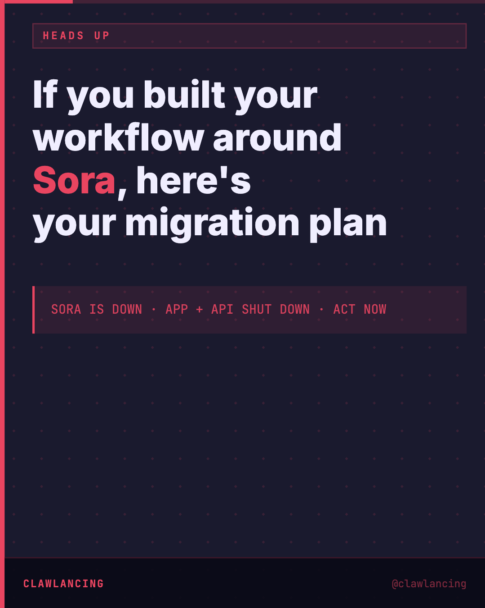
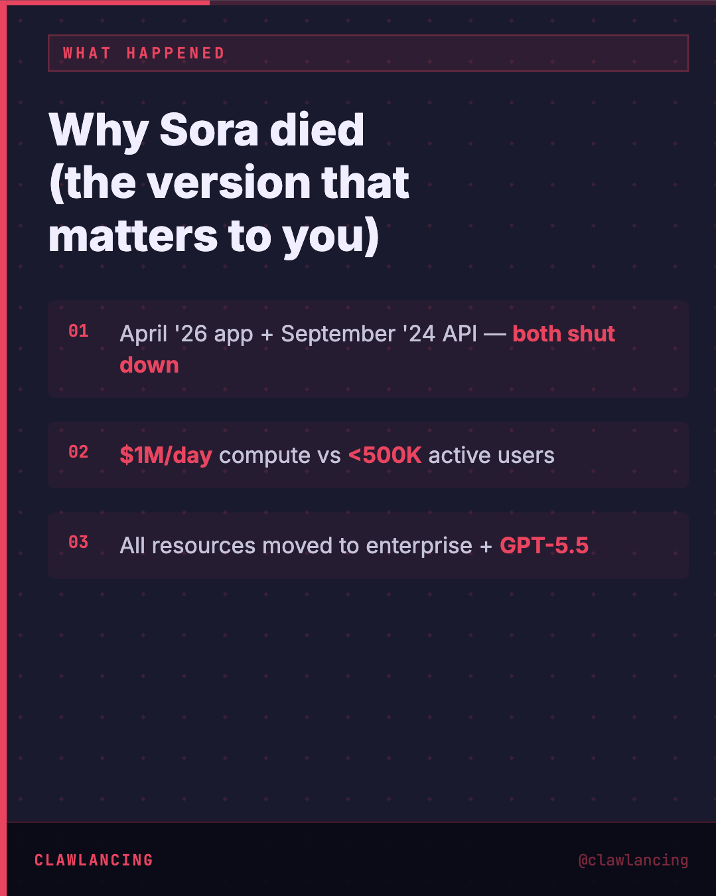
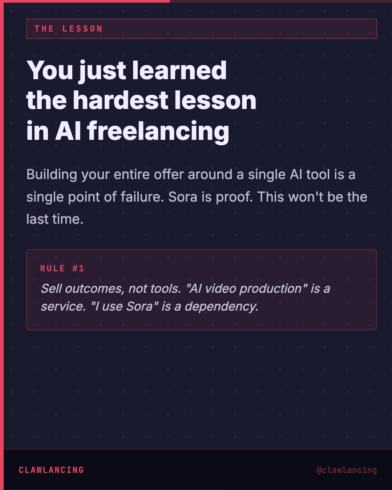
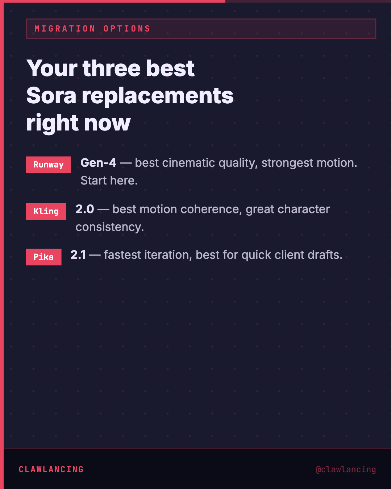
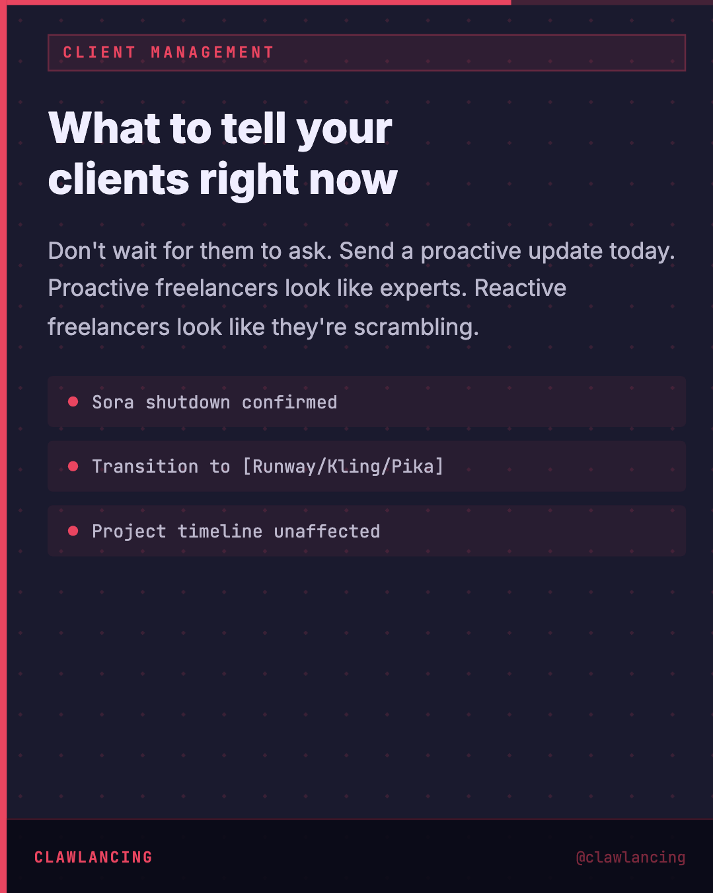
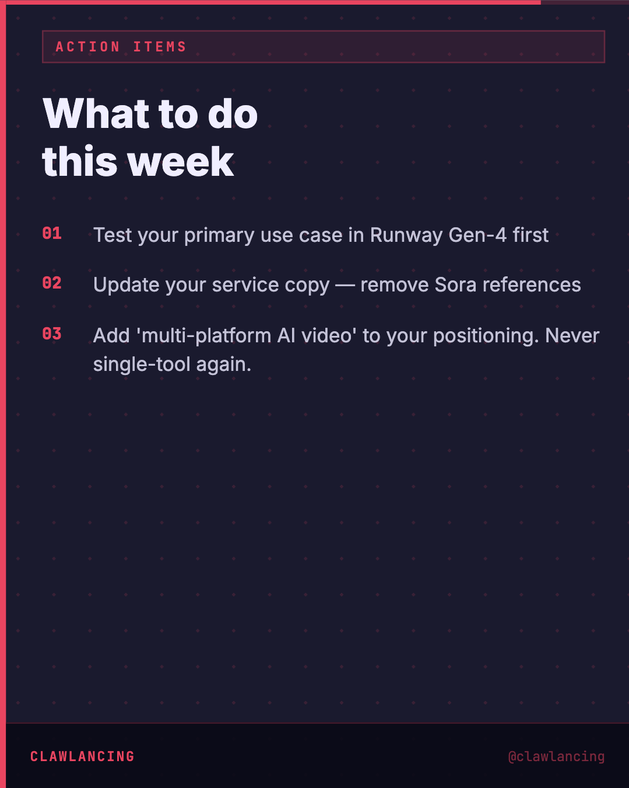
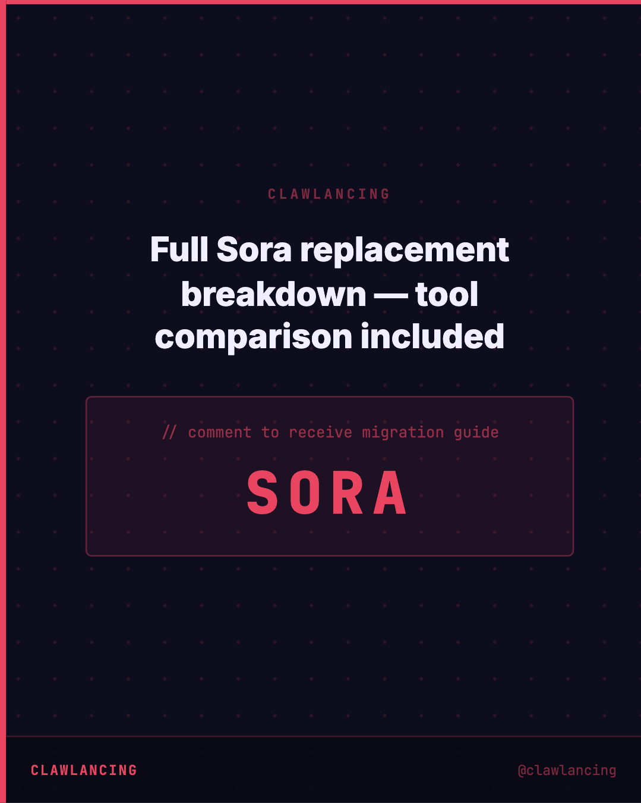

Key Takeaways
01
April 26 app + September 24 API — both shut down
02
$1M/day compute cost vs <500K active users
03
OpenAI pivoting all resources to enterprise + GPT-5.5
04
You just learned
the hardest lesson
in AI freelancing — Building your entire offer around a single AI tool is a single point of failure. Sora is proof. This won't be the last t
05
Runway Gen-4 — best cinematic quality, strongest motion
06
Kling 2.0 — best motion coherence, great for character consistency
Analysis
Sora is shut down. If you're an AI freelancer, here's the practical response.
OpenAI discontinued Sora today — $1M/day compute costs, under 500K active users, enterprise pivot underway. The shutdown covers both the consumer app and the developer API.
For freelancers who had Sora in their workflow, the migration path in order of priority:
1. Runway Gen-4 — best output quality for client-facing work. Strongest motion fidelity and cinematic rendering. Start here.
2. Kling 2.0 — best for projects requiring scene/character consistency. Stronger on narrative continuity than Runway.
3. Pika 2.1 — fastest turnaround. Ideal when clients need rapid iteration rather than maximum polish.
Two things I'd prioritise immediately:
First, client communication. Send a proactive update today — don't wait for them to bring it up. Explain what happened, which tool you're transitioning to, and confirm their timeline is unaffected. Proactive outreach positions you as the expert. Waiting makes you look reactive.
Second, positioning audit. If your service description mentions Sora by name, update it. The strongest freelancer positioning doesn't name specific tools — it names outcomes. "AI video production" is a service. "I use Sora" is a dependency.
This won't be the last tool shutdown in AI. Platform-agnostic offer positioning is the professional standard going forward.
What are you migrating to — Runway, Kling, or Pika?
OpenAI discontinued Sora today — $1M/day compute costs, under 500K active users, enterprise pivot underway. The shutdown covers both the consumer app and the developer API.
For freelancers who had Sora in their workflow, the migration path in order of priority:
1. Runway Gen-4 — best output quality for client-facing work. Strongest motion fidelity and cinematic rendering. Start here.
2. Kling 2.0 — best for projects requiring scene/character consistency. Stronger on narrative continuity than Runway.
3. Pika 2.1 — fastest turnaround. Ideal when clients need rapid iteration rather than maximum polish.
Two things I'd prioritise immediately:
First, client communication. Send a proactive update today — don't wait for them to bring it up. Explain what happened, which tool you're transitioning to, and confirm their timeline is unaffected. Proactive outreach positions you as the expert. Waiting makes you look reactive.
Second, positioning audit. If your service description mentions Sora by name, update it. The strongest freelancer positioning doesn't name specific tools — it names outcomes. "AI video production" is a service. "I use Sora" is a dependency.
This won't be the last tool shutdown in AI. Platform-agnostic offer positioning is the professional standard going forward.
What are you migrating to — Runway, Kling, or Pika?
Visual Breakdown






